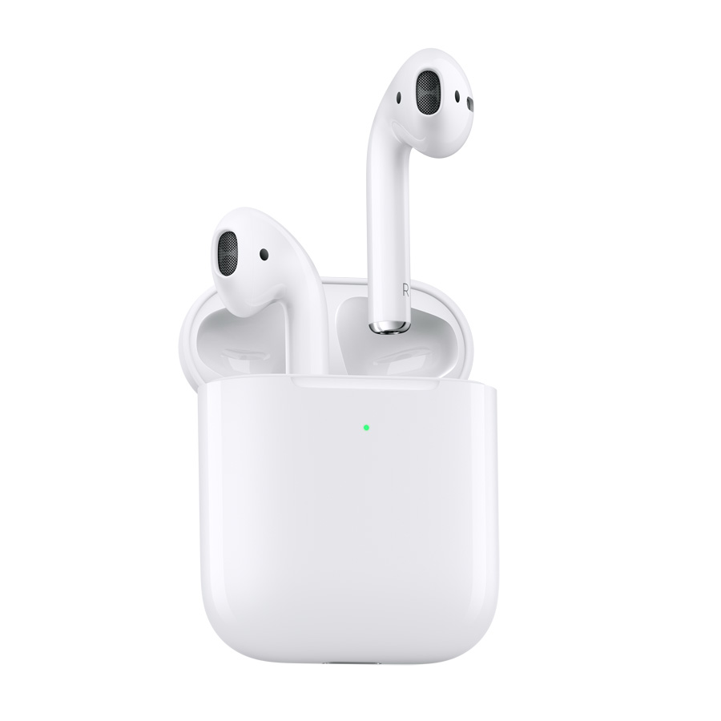
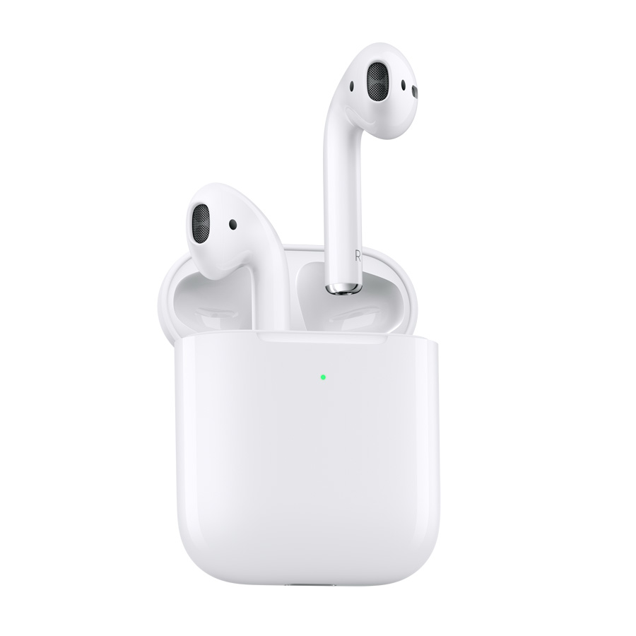

Apple Macbook Pro M1 Pro, M1 Max!!!

The MacBook Pro is a line of Mac laptops made by Apple Inc. Introduced in January 2006, it is the higher-end lineup in the MacBook family, sitting above the consumer-focused MacBook Air. It is currently sold with 13-inch, 14-inch, and 16-inch screens, all using Apple silicon M-series chips. The original MacBook Pro used the design of the PowerBook G4, but replaced the PowerPC G4 chips with Intel Core processors, added a webcam, and introduced the MagSafe power connector. The 15-inch model was introduced in January 2006; the 17-inch model in April. Later revisions added Intel Core 2 Duo processors and LED-backlit displays.The unibody model debuted in October 2008 in 13- and 15-inch variants, with a 17-inch variant added in January 2009. Called the "unibody" model because its case was machined from a single piece of aluminum, it had a thinner flush display, a redesigned trackpad whose entire surface consisted of a single clickable button, and a redesigned keyboard. Updates brought Intel Core i5 and i7 processors and introduced Intel's Thunderbolt.The Retina MacBook Pro was released in 2012: the 15-inch in June, a 13-inch model in October. It is thinner than its predecessor, made solid-state storage (SSD) standard, added HDMI, and included a high-resolution Retina display. It eliminated Ethernet and FireWire ports and the optical drive.The Touch Bar MacBook Pro, released in October 2016, adopted USB-C for all data ports and power and included a shallower "butterfly"-mechanism keyboard. On all but the base model, the function keys were replaced with a touchscreen strip called the Touch Bar with a Touch ID sensor integrated into the power button.

Apple Products
There are many products of Apple
- Apple TV
- Macbook
- iPhone
- iwatch
- ipad
- Airpod
- Homepod
- Headset
 


What Can I get it?
This one's a bit of a splurge, especially if your bank account feels a little flimsy after the downpayment. But you'll be happy you thought ahead and got a home generator if your new town is prone to bad weather events like ice stormsPowering a space heater and the fridge can be just enough to keep you and your family comfortable while you wait for the electrical crews to finish up. From one new homeowner to another, let me just say . . . don't skip this one. I had no idea water was such a pain in the you-know-what until I was responsible for my very own house. It's very hard to detect a water leak until it is right in front of your face